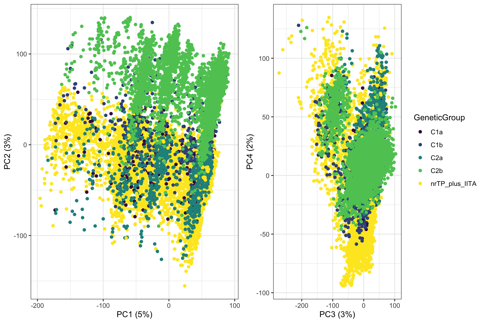
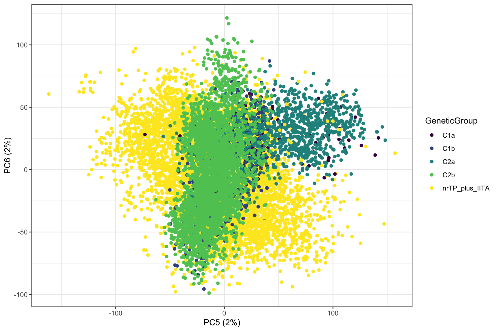

Last updated: 2019-11-21
Checks: 7 0
Knit directory: NRCRI_2019GS/
This reproducible R Markdown analysis was created with workflowr (version 1.5.0.9000). The Checks tab describes the reproducibility checks that were applied when the results were created. The Past versions tab lists the development history.
Great! Since the R Markdown file has been committed to the Git repository, you know the exact version of the code that produced these results.
Great job! The global environment was empty. Objects defined in the global environment can affect the analysis in your R Markdown file in unknown ways. For reproduciblity it’s best to always run the code in an empty environment.
The command set.seed(20191121) was run prior to running the code in the R Markdown file. Setting a seed ensures that any results that rely on randomness, e.g. subsampling or permutations, are reproducible.
Great job! Recording the operating system, R version, and package versions is critical for reproducibility.
Nice! There were no cached chunks for this analysis, so you can be confident that you successfully produced the results during this run.
Great job! Using relative paths to the files within your workflowr project makes it easier to run your code on other machines.
Great! You are using Git for version control. Tracking code development and connecting the code version to the results is critical for reproducibility. The version displayed above was the version of the Git repository at the time these results were generated.
Note that you need to be careful to ensure that all relevant files for the analysis have been committed to Git prior to generating the results (you can use wflow_publish or wflow_git_commit). workflowr only checks the R Markdown file, but you know if there are other scripts or data files that it depends on. Below is the status of the Git repository when the results were generated:
Ignored files:
Ignored: .DS_Store
Ignored: .Rproj.user/
Ignored: analysis/.DS_Store
Ignored: output/.DS_Store
Untracked files:
Untracked: data/GBSdataMasterList_31818.csv
Untracked: data/IITA_GBStoPhenoMaster_33018.csv
Untracked: data/NRCRI_CleanedTrialData_72519.rds
Untracked: data/NRCRI_ExptDesignsDetected_72719.rds
Untracked: data/NRCRI_GBStoPhenoMaster_40318.csv
Untracked: data/iita_blupsForCrossVal_72619.rds
Untracked: data/iita_blupsForCrossVal_outliersRemoved_73019.rds
Untracked: data/nrcri_blupsForCrossVal_72719.rds
Untracked: data/nrcri_blupsForCrossVal_outliersRemoved_73019.rds
Untracked: output/CrossVal_72819/
Untracked: output/CrossVal_73019/
Untracked: output/GEBV_BRNHT1_IITAaugmented_OutliersEqualFALSE_NRCRI_73119.rds
Untracked: output/GEBV_BRNHT1_IITAaugmented_OutliersEqualTRUE_NRCRI_73119.rds
Untracked: output/GEBV_BRNHT1_NRCRIonly_OutliersEqualFALSE_NRCRI_73119.rds
Untracked: output/GEBV_BRNHT1_NRCRIonly_OutliersEqualTRUE_NRCRI_73119.rds
Untracked: output/GEBV_CGMS1_IITAaugmented_OutliersEqualFALSE_NRCRI_73119.rds
Untracked: output/GEBV_CGMS1_IITAaugmented_OutliersEqualTRUE_NRCRI_73119.rds
Untracked: output/GEBV_CGMS1_NRCRIonly_OutliersEqualFALSE_NRCRI_73119.rds
Untracked: output/GEBV_CGMS1_NRCRIonly_OutliersEqualTRUE_NRCRI_73119.rds
Untracked: output/GEBV_CGMS2_IITAaugmented_OutliersEqualFALSE_NRCRI_73119.rds
Untracked: output/GEBV_CGMS2_IITAaugmented_OutliersEqualTRUE_NRCRI_73119.rds
Untracked: output/GEBV_CGMS2_NRCRIonly_OutliersEqualFALSE_NRCRI_73119.rds
Untracked: output/GEBV_CGMS2_NRCRIonly_OutliersEqualTRUE_NRCRI_73119.rds
Untracked: output/GEBV_DM_IITAaugmented_OutliersEqualFALSE_NRCRI_73119.rds
Untracked: output/GEBV_DM_IITAaugmented_OutliersEqualTRUE_NRCRI_73119.rds
Untracked: output/GEBV_DM_NRCRIonly_OutliersEqualFALSE_NRCRI_73119.rds
Untracked: output/GEBV_DM_NRCRIonly_OutliersEqualTRUE_NRCRI_73119.rds
Untracked: output/GEBV_HI_IITAaugmented_OutliersEqualFALSE_NRCRI_73119.rds
Untracked: output/GEBV_HI_IITAaugmented_OutliersEqualTRUE_NRCRI_73119.rds
Untracked: output/GEBV_HI_NRCRIonly_OutliersEqualFALSE_NRCRI_73119.rds
Untracked: output/GEBV_HI_NRCRIonly_OutliersEqualTRUE_NRCRI_73119.rds
Untracked: output/GEBV_MCMDS_IITAaugmented_OutliersEqualFALSE_NRCRI_73119.rds
Untracked: output/GEBV_MCMDS_IITAaugmented_OutliersEqualTRUE_NRCRI_73119.rds
Untracked: output/GEBV_MCMDS_NRCRIonly_OutliersEqualFALSE_NRCRI_73119.rds
Untracked: output/GEBV_MCMDS_NRCRIonly_OutliersEqualTRUE_NRCRI_73119.rds
Untracked: output/GEBV_NRCRI_IITAaugmented_OutliersRemovedFALSE_73119.csv
Untracked: output/GEBV_NRCRI_IITAaugmented_OutliersRemovedTRUE_73119.csv
Untracked: output/GEBV_NRCRI_NRCRIonly_OutliersRemovedFALSE_73119.csv
Untracked: output/GEBV_NRCRI_NRCRIonly_OutliersRemovedTRUE_73119.csv
Untracked: output/GEBV_PLTHT_IITAaugmented_OutliersEqualFALSE_NRCRI_73119.rds
Untracked: output/GEBV_PLTHT_IITAaugmented_OutliersEqualTRUE_NRCRI_73119.rds
Untracked: output/GEBV_PLTHT_NRCRIonly_OutliersEqualFALSE_NRCRI_73119.rds
Untracked: output/GEBV_PLTHT_NRCRIonly_OutliersEqualTRUE_NRCRI_73119.rds
Untracked: output/GEBV_logFYLD_IITAaugmented_OutliersEqualFALSE_NRCRI_73119.rds
Untracked: output/GEBV_logFYLD_IITAaugmented_OutliersEqualTRUE_NRCRI_73119.rds
Untracked: output/GEBV_logFYLD_NRCRIonly_OutliersEqualFALSE_NRCRI_73119.rds
Untracked: output/GEBV_logFYLD_NRCRIonly_OutliersEqualTRUE_NRCRI_73119.rds
Untracked: output/GEBV_logRTNO_IITAaugmented_OutliersEqualFALSE_NRCRI_73119.rds
Untracked: output/GEBV_logRTNO_IITAaugmented_OutliersEqualTRUE_NRCRI_73119.rds
Untracked: output/GEBV_logRTNO_NRCRIonly_OutliersEqualFALSE_NRCRI_73119.rds
Untracked: output/GEBV_logRTNO_NRCRIonly_OutliersEqualTRUE_NRCRI_73119.rds
Untracked: output/GEBV_logTOPYLD_IITAaugmented_OutliersEqualFALSE_NRCRI_73119.rds
Untracked: output/GEBV_logTOPYLD_IITAaugmented_OutliersEqualTRUE_NRCRI_73119.rds
Untracked: output/GEBV_logTOPYLD_NRCRIonly_OutliersEqualFALSE_NRCRI_73119.rds
Untracked: output/GEBV_logTOPYLD_NRCRIonly_OutliersEqualTRUE_NRCRI_73119.rds
Untracked: output/PCscores_NRCRI_SamplesForGP_73119.rds
Untracked: workflowr_log.R
Note that any generated files, e.g. HTML, png, CSS, etc., are not included in this status report because it is ok for generated content to have uncommitted changes.
These are the previous versions of the R Markdown and HTML files. If you’ve configured a remote Git repository (see ?wflow_git_remote), click on the hyperlinks in the table below to view them.
| File | Version | Author | Date | Message |
|---|---|---|---|---|
| Rmd | 00ce81b | wolfemd | 2019-11-21 | Publish the first set of analyses and files for NRCRI 2019 GS, |
blupsNoOut<-readRDS(file="data/iita_blupsForCrossVal_outliersRemoved_73019.rds")
blups<-readRDS(file="data/iita_blupsForCrossVal_72619.rds")
blups<-blupsNoOut %>%
dplyr::select(Trait,blups) %>%
mutate(OutliersRemoved=TRUE) %>%
bind_rows(
blups %>%
filter(Dataset=="HistoricalDataIncluded" | Trait %in% c("BRNHT1","PLTHT")) %>%
dplyr::select(Trait,blups) %>%
mutate(OutliersRemoved=FALSE))
gidsInPhenos<-tibble(GID=blups %>% unnest() %$% GID %>% unique)
gidsInPhenos %<>%
left_join(
tibble(dartName=rownames(snps) %>% grep("TMS18",.,value=T)) %>%
separate(dartName,c("GID","dartID"),"_",extra = 'merge',remove = F) %>%
semi_join(gidsInPhenos) %>%
group_by(GID) %>%
slice(1) %>%
ungroup()) %>%
mutate(NewName=ifelse(!is.na(dartName),dartName,GID))
blups %<>%
unnest(blups) %>%
left_join(gidsInPhenos) %>%
mutate(GID=NewName) %>%
dplyr::select(-dartName,-dartID,-NewName) %>%
filter(GID %in% rownames(snps)) %>%
group_by(Trait,OutliersRemoved) %>%
nest(.key = "trainingData")
iitablups<-blups
iitaGIDsInPhenos<-gidsInPhenosblupsNoOut<-readRDS(file="data/nrcri_blupsForCrossVal_72719.rds")
blups<-readRDS(file="data/nrcri_blupsForCrossVal_outliersRemoved_73019.rds")
blups<-blupsNoOut %>%
dplyr::select(Trait,blups) %>%
mutate(OutliersRemoved=TRUE) %>%
bind_rows(
blups %>%
dplyr::select(Trait,blups) %>%
mutate(OutliersRemoved=FALSE))
gidsInPhenos<-tibble(GID=blups %>% unnest() %$% GID %>% unique)
table(gidsInPhenos$GID %in% rownames(snps)) # 1241
gidsInPhenos$GID[gidsInPhenos$GID %in% rownames(snps)] %>% grep("C1b",.,ignore.case = T, value = T) # none
gidsInPhenos %<>%
mutate(NewName=GID) %>%
filter(NewName %in% rownames(snps)) %>%
bind_rows(
gidsInPhenos %>%
mutate(NewName=GID) %>%
filter(!NewName %in% rownames(snps)) %>%
left_join(
tibble(FullSampleName=grep("C1b",rownames(snps),ignore.case = T,value = T)) %>%
separate(FullSampleName,c("NewName","GBS_ID"),":",extra = 'merge',remove = F) %>%
mutate(NewName=paste0("NR16",NewName)) %>%
dplyr::select(-GBS_ID)) %>%
filter(!is.na(FullSampleName)) %>%
mutate(NewName=FullSampleName) %>%
dplyr::select(-FullSampleName)) %>%
bind_rows(
gidsInPhenos %>%
mutate(NewName=GID) %>%
filter(!NewName %in% rownames(snps),
grepl("C2a",NewName,ignore.case = T)) %>%
left_join(
tibble(dartName=grep("C2a",rownames(snps),ignore.case = T,value = T)) %>%
separate(dartName,c("dartID","NewName"),"\\.\\.\\.",extra = 'merge',remove = F) %>%
filter(!is.na(NewName))) %>%
mutate(NewName=ifelse(!is.na(dartName),dartName,NewName)) %>%
dplyr::select(-dartName,-dartID)) %>%
filter(NewName %in% rownames(snps))
table(gidsInPhenos$NewName %in% rownames(snps)) # 2768
blups %<>%
unnest(blups) %>%
left_join(gidsInPhenos) %>%
filter(!is.na(NewName)) %>%
mutate(GID=NewName) %>%
dplyr::select(-NewName) %>%
group_by(Trait,OutliersRemoved) %>%
nest(.key = "trainingData")pca<-prcomp(snps, scale=T, center=T)
pc_scores<-pca$x %>%
.[,1:15] %>%
as.data.frame %>%
rownames_to_column(var="FullSampleName") %>%
mutate(GeneticGroup=NA,
GeneticGroup=ifelse(FullSampleName %in% iitaGIDsInPhenos$NewName,"IITA",
ifelse(grepl("C2aF",FullSampleName,ignore.case = T),"C2a",
ifelse(grepl("C2bF",FullSampleName,ignore.case = T),"C2b",
ifelse(grep("^F",FullSampleName,value = T),"C1a",
ifelse(grepl("C1b",FullSampleName,ignore.case = T),"C1b","nrTP"))))))
pc_scores %>%
count(GeneticGroup)
summary(pca)$importance[,1:10] PC1 PC2 PC3 PC4 PC5 PC6Standard deviation 59.20352 48.62852 42.35600 36.86073 35.90890 33.34435 Proportion of Variance 0.05102 0.03442 0.02612 0.01978 0.01877 0.01619 Cumulative Proportion 0.05102 0.08545 0.11156 0.13134 0.15011 0.16630 PC7 PC8 PC9 PC10 Standard deviation 32.97758 30.70189 30.22302 27.44181 Proportion of Variance 0.01583 0.01372 0.01330 0.01096 Cumulative Proportion 0.18213 0.19585 0.20915 0.22011
Save PCA results
saveRDS(pc_scores,file="/workdir/marnin/NRCRI_2019GS/PCscores_NRCRI_SamplesForGP_73119.rds")
saveRDS(pca,file="/workdir/marnin/NRCRI_2019GS/PCA_NRCRI_SamplesForGP_73119.rds")
rm(pca); gc()Copy to local machine 0.04623 0.02847 0.02576 0.02201
used (Mb) gc trigger (Mb) limit (Mb) max used (Mb)
Ncells 605523 32.4 1301822 69.6 NA 1011655 54.1
Vcells 1159599 8.9 8388608 64.0 102400 1943513 14.9library(tidyverse); library(magrittr); library(cowplot);
pc_scores<-readRDS("output/PCscores_NRCRI_SamplesForGP_73119.rds")
pc_scores$FullSampleName %>% grep("C1b",.,value = T,ignore.case = T) [1] "F100C1bP001:CA7RRANXX:3:499789" "F104C1bP001:CA7RRANXX:3:499798"
[3] "F106C1bP002:CA7RRANXX:3:499808" "F107C1bP001:CA7RRANXX:3:499809"
[5] "F107C1bP003:CA7RRANXX:3:499811" "F107C1bP004:CA7RRANXX:3:499812"
[7] "F108C1bP002:CA7RRANXX:3:499816" "F109C1bP002:CA7RRANXX:3:499819"
[9] "F10C1bP004:CABV7ANXX:5:503877" "F10C1bP005:CABV7ANXX:5:503878"
[11] "F10C1bP012:CABV7ANXX:5:503885" "F10C1bP013:CABV7ANXX:5:503886"
[13] "F10C1bP016:CABV7ANXX:5:503889" "F10C1bP017:CABV7ANXX:5:503890"
[15] "F112C1bP002:CA7RRANXX:3:499829" "F112C1bP005:CA7RRANXX:3:499832"
[17] "F114C1bP001:CA7RRANXX:3:499834" "F115C1bP001:CA7RRANXX:3:499835"
[19] "F116C1bP003:CA7RRANXX:3:499838" "F116C1bP004:CA7RRANXX:3:499839"
[21] "F116C1bP006:CA7RRANXX:3:499841" "F116C1bP017:CA7RRANXX:4:499852"
[23] "F117C1bP004:CA7RRANXX:4:499856" "F117C1bP005:CA7RRANXX:4:499857"
[25] "F118C1bP001:CA7RRANXX:4:499858" "F118C1bP002:CA7RRANXX:4:499859"
[27] "F118C1bP004:CA7RRANXX:4:499861" "F11C1bP001:CABV7ANXX:5:503891"
[29] "F11C1bP002:CABV7ANXX:5:503892" "F11C1bP012:CABV7ANXX:5:503903"
[31] "F11C1bP018:CABV7ANXX:5:503909" "F120C1bP005:CA7RRANXX:4:499866"
[33] "F120C1bP007:CA7RRANXX:4:499869" "F120C1bP008:CA7RRANXX:4:499870"
[35] "F121C1bP002:CA7RRANXX:4:499875" "F121C1bP004:CA7RRANXX:4:499877"
[37] "F121C1bP009:CA7RRANXX:4:499882" "F122C1bP001:CA7RRANXX:4:499884"
[39] "F122C1bP004:CA7RRANXX:4:499887" "F122C1bP009:CA7RRANXX:4:499892"
[41] "F122C1bP010:CA7RRANXX:4:499893" "F123C1bP005:CA7RRANXX:4:499898"
[43] "F123C1bP006:CA7RRANXX:4:499899" "F123C1bP007:CA7RRANXX:4:499900"
[45] "F126C1bP003:CA7RRANXX:4:499912" "F127C1bP001:CA7RRANXX:4:499913"
[47] "F127C1bP004:CA7RRANXX:4:499916" "F128C1bP003:CA7RRANXX:4:499922"
[49] "F128C1bP010:CA7RRANXX:4:499929" "F129C1bP001:CA7RRANXX:4:499930"
[51] "F129C1bP002:CA7RRANXX:4:499931" "F129C1bP003:CA7RRANXX:4:499932"
[53] "F12C1bP001:CABV7ANXX:5:503915" "F12C1bP018:CABV7ANXX:5:503932"
[55] "F12C1bP020:CABV7ANXX:5:503934" "F134C1bP005:CABJYANXX:5:505226"
[57] "F136C1bP002:CABJYANXX:5:505240" "F136C1bP006:CABJYANXX:5:505244"
[59] "F137C1bP003:CABJYANXX:5:505249" "F137C1bP005:CABJYANXX:5:505251"
[61] "F137C1bP006:CABJYANXX:5:505252" "F137C1bP011:CABJYANXX:5:505257"
[63] "F139C1bP002:CABJYANXX:5:505264" "F139C1bP003:CABJYANXX:5:505265"
[65] "F139C1bP005:CABJYANXX:5:505267" "F140C1bP001:CABJYANXX:5:505270"
[67] "F140C1bP002:CABJYANXX:5:505271" "F140C1bP003:CABJYANXX:5:505272"
[69] "F140C1bP004:CABJYANXX:5:505273" "F140C1bP006:CABJYANXX:5:505275"
[71] "F140C1bP007:CABJYANXX:5:505276" "F140C1bP008:CABJYANXX:5:505277"
[73] "F141C1bP001:CABJYANXX:5:505279" "F141C1bP005:CABJYANXX:5:505283"
[75] "F142C1bP001:CABJYANXX:5:505292" "F144C1bP001:CABJYANXX:5:505298"
[77] "F144C1bP004:CABJYANXX:5:505302" "F144C1bP006:CABJYANXX:5:505304"
[79] "F144C1bP007:CABJYANXX:5:505305" "F144C1bP010:CABJYANXX:5:505308"
[81] "F145C1bP001:CABJYANXX:5:505309" "F145C1bP003:CABJYANXX:5:505311"
[83] "F146C1bP001:CABJYANXX:5:505312" "F147C1bP001:CABJYANXX:5:505313"
[85] "F148C1bP002:CABJYANXX:5:505316" "F149C1bP002:CA7RRANXX:5:499944"
[87] "F14C1bP003:CABV7ANXX:5:503947" "F152C1bP007:CA7RRANXX:5:499958"
[89] "F152C1bP008:CA7RRANXX:5:499959" "F152C1bP009:CA7RRANXX:5:499960"
[91] "F152C1bP010:CA7RRANXX:5:499961" "F152C1bP014:CA7RRANXX:5:499965"
[93] "F152C1bP016:CA7RRANXX:5:499967" "F152C1bP019:CA7RRANXX:5:499969"
[95] "F152C1bP020:CA7RRANXX:5:499970" "F153C1bP001:CA7RRANXX:5:499974"
[97] "F153C1bP005:CA7RRANXX:5:499978" "F153C1bP012:CA7RRANXX:5:499985"
[99] "F153C1bP016:CA7RRANXX:5:499989" "F153C1bP020:CA7RRANXX:5:499993"
[101] "F153C1bP022:CA7RRANXX:5:499995" "F153C1bP030:CA7RRANXX:5:500003"
[103] "F153C1bP033:CA7RRANXX:5:500007" "F153C1bP034:CA7RRANXX:5:500008"
[105] "F153C1bP039:CA7RRANXX:5:500013" "F153C1bP042:CA7RRANXX:5:500016"
[107] "F153C1bP047:CA7RRANXX:5:500021" "F153C1bP052:CA7RRANXX:5:500026"
[109] "F153C1bP055:CA7RRANXX:5:500029" "F153C1bP056:CA7RRANXX:5:500030"
[111] "F153C1bP057:CA7RRANXX:5:500031" "F154C1bP001:CA7RRANXX:5:500032"
[113] "F154C1bP005:CA7RRANXX:5:500036" "F154C1bP014:CABJYANXX:6:505420"
[115] "F154C1bP015:CABJYANXX:6:505421" "F154C1bP016:CABJYANXX:6:505422"
[117] "F154C1bP017:CABJYANXX:6:505423" "F154C1bP020:CABJYANXX:6:505426"
[119] "F154C1bP021:CABJYANXX:6:505427" "F154C1bP023:CABJYANXX:6:505429"
[121] "F154C1bP024:CABJYANXX:6:505430" "F154C1bP025:CABJYANXX:6:505431"
[123] "F154C1bP026:CABJYANXX:6:505432" "F154C1bP028:CABJYANXX:6:505434"
[125] "F156C1bP001:CABJYANXX:6:505446" "F156C1bP006:CABJYANXX:6:505451"
[127] "F157C1bP001:CABJYANXX:6:505457" "F158C1bP001:CABJYANXX:6:505458"
[129] "F158C1bP009:CABJYANXX:6:505466" "F158C1bP010:CABJYANXX:6:505467"
[131] "F158C1bP011:CABJYANXX:6:505468" "F158C1bP016:CABJYANXX:6:505473"
[133] "F158C1bP018:CABJYANXX:6:505475" "F159C1bP001:CABJYANXX:6:505477"
[135] "F159C1bP007:CABJYANXX:6:505483" "F159C1bP009:CABJYANXX:6:505485"
[137] "F159C1bP010:CABJYANXX:6:505486" "F159C1bP012:CABJYANXX:6:505489"
[139] "F159C1bP013:CABJYANXX:6:505490" "F159C1bP015:CABJYANXX:6:505492"
[141] "F159C1bP017:CABJYANXX:6:505494" "F160C1bP001:CABJYANXX:6:505495"
[143] "F160C1bP006:CABJYANXX:6:505500" "F160C1bP007:CABJYANXX:6:505501"
[145] "F162C1bP004:CABJYANXX:7:505511" "F162C1bP006:CABJYANXX:7:505513"
[147] "F163C1bP002:CABJYANXX:7:505518" "F163C1bP003:CABJYANXX:7:505519"
[149] "F163C1bP006:CABJYANXX:7:505522" "F163C1bP010:CABJYANXX:7:505526"
[151] "F164C1bP002:CABJYANXX:7:505530" "F164C1bP004:CABJYANXX:7:505532"
[153] "F165C1bP001:CABJYANXX:7:505538" "F165C1bP003:CABJYANXX:7:505540"
[155] "F165C1bP006:CABJYANXX:7:505543" "F165C1bP007:CABJYANXX:7:505544"
[157] "F165C1bP016:CABJYANXX:7:505553" "F165C1bP019:CABJYANXX:7:505556"
[159] "F166C1bP001:CABJYANXX:7:505560" "F166C1bP002:CABJYANXX:7:505561"
[161] "F168C1bP003:CABJYANXX:7:505568" "F168C1bP005:CABJYANXX:7:505570"
[163] "F168C1bP006:CABJYANXX:7:505571" "F168C1bP007:CABJYANXX:7:505572"
[165] "F168C1bP008:CABJYANXX:7:505573" "F168C1bP013:CABJYANXX:7:505578"
[167] "F169C1bP001:CABJYANXX:7:505579" "F169C1bP003:CABJYANXX:7:505581"
[169] "F16C1bP006:CABV7ANXX:5:503953" "F16C1bP007:CABV7ANXX:5:503954"
[171] "F170C1bP001:CABJYANXX:7:505586" "F170C1bP006:CABJYANXX:7:505590"
[173] "F170C1bP014:CABJYANXX:7:505598" "F170C1bP016:CABJYANXX:7:505600"
[175] "F171C1bP002:CA7RRANXX:6:500083" "F171C1bP002:CA7RRANXX:6:500040"
[177] "F171C1bP004:CA7RRANXX:6:500085" "F171C1bP004:CA7RRANXX:6:500042"
[179] "F171C1bP005:CA7RRANXX:6:500086" "F171C1bP005:CA7RRANXX:6:500043"
[181] "F173C1bP003:CA7RRANXX:6:500090" "F173C1bP003:CA7RRANXX:6:500047"
[183] "F173C1bP006:CA7RRANXX:6:500093" "F173C1bP006:CA7RRANXX:6:500050"
[185] "F173C1bP008:CA7RRANXX:6:500052" "F173C1bP008:CA7RRANXX:6:500095"
[187] "F174C1bP001:CA7RRANXX:6:500097" "F174C1bP001:CA7RRANXX:6:500054"
[189] "F174C1bP002:CA7RRANXX:6:500098" "F174C1bP002:CA7RRANXX:6:500055"
[191] "F179C1bP001:CA7RRANXX:6:500066" "F179C1bP001:CA7RRANXX:6:500109"
[193] "F179C1bP002:CA7RRANXX:6:500110" "F179C1bP002:CA7RRANXX:6:500067"
[195] "F17C1bP005:CABV7ANXX:5:503959" "F17C1bP006:CABV7ANXX:5:503960"
[197] "F17C1bP012:CABV7ANXX:5:503966" "F17C1bP013:CABV7ANXX:5:503967"
[199] "F180C1bP001:CA7RRANXX:6:500111" "F180C1bP001:CA7RRANXX:6:500068"
[201] "F182C1bP001:CA7RRANXX:6:500125" "F182C1bP001:CA7RRANXX:6:500115"
[203] "F182C1bP001:CA7RRANXX:6:500073" "F185C1bP001:CA7RRANXX:6:500079"
[205] "F185C1bP001:CA7RRANXX:6:500121" "F185C1bP001:CA7RRANXX:6:500131"
[207] "F185C1bP001:CA7RRANXX:6:500132" "F18C1bP005:CABV7ANXX:5:503972"
[209] "F19C1bP001:CABV7ANXX:6:504551" "F19C1bP002:CABV7ANXX:6:504552"
[211] "F1C1bP002:CA7RRANXX:2:499654" "F1C1bP003:CA7RRANXX:2:499655"
[213] "F1C1bP005:CA7RRANXX:2:499658" "F1C1bP010:CA7RRANXX:2:499663"
[215] "F20C1bP001:CABV7ANXX:6:504557" "F20C1bP004:CABV7ANXX:6:504560"
[217] "F27C1bP001:CABV7ANXX:6:504577" "F27C1bP002:CABV7ANXX:6:504578"
[219] "F27C1bP005:CABV7ANXX:6:504581" "F27C1bP006:CABV7ANXX:6:504582"
[221] "F27C1bP007:CABV7ANXX:6:504583" "F27C1bP008:CABV7ANXX:6:504584"
[223] "F27C1bP012:CABV7ANXX:6:504588" "F28C1bP002:CABV7ANXX:6:504591"
[225] "F28C1bP006:CABV7ANXX:6:504595" "F28C1bP007:CABV7ANXX:6:504596"
[227] "F2C1bP006:CA7RRANXX:2:499672" "F2C1bP007:CA7RRANXX:2:499673"
[229] "F2C1bP010:CA7RRANXX:2:499676" "F2C1bP012:CA7RRANXX:2:499678"
[231] "F2C1bP015:CA7RRANXX:2:499681" "F2C1bP017:CA7RRANXX:2:499683"
[233] "F2C1bP022:CA7RRANXX:2:499688" "F2C1bP024:CA7RRANXX:2:499690"
[235] "F2C1bP028:CA7RRANXX:2:499694" "F2C1bP029:CA7RRANXX:2:499695"
[237] "F2C1bP034:CA7RRANXX:2:499700" "F2C1bP037:CA7RRANXX:2:499703"
[239] "F2C1bP038:CA7RRANXX:2:499704" "F2C1bP039:CA7RRANXX:2:499705"
[241] "F30C1bP005:CABV7ANXX:6:504604" "F30C1bP011:CABV7ANXX:6:504610"
[243] "F30C1bP013:CABV7ANXX:6:504612" "F30C1bP015:CABV7ANXX:6:504614"
[245] "F30C1bP020:CABV7ANXX:6:504619" "F30C1bP021:CABV7ANXX:6:504620"
[247] "F30C1bP022:CABV7ANXX:6:504621" "F30C1bP023:CABV7ANXX:6:504622"
[249] "F30C1bP026:CABV7ANXX:6:504625" "F30C1bP027:CABV7ANXX:6:504626"
[251] "F30C1bP029:CABV7ANXX:6:504628" "F31C1bP001:CABV7ANXX:6:504629"
[253] "F31C1bP002:CABV7ANXX:6:504630" "F31C1bP003:CABV7ANXX:6:504631"
[255] "F31C1bP006:CABV7ANXX:6:504634" "F32C1bP003:CABV7ANXX:6:504637"
[257] "F32C1bP005:CABV7ANXX:6:504639" "F32C1bP007:CABV7ANXX:6:504641"
[259] "F32C1bP008:CABV7ANXX:6:504642" "F32C1bP010:CABV7ANXX:6:504644"
[261] "F32C1bP011:CABV7ANXX:7:504645" "F33C1bP002:CABV7ANXX:7:504647"
[263] "F34C1bP001:CABV7ANXX:7:504649" "F37C1bP002:CABV7ANXX:7:504674"
[265] "F3C1bP005:CA7RRANXX:2:499719" "F3C1bP012:CA7RRANXX:2:499726"
[267] "F3C1bP014:CA7RRANXX:2:499728" "F3C1bP017:CA7RRANXX:2:499731"
[269] "F3C1bP018:CA7RRANXX:2:499732" "F3C1bP028:CA7RRANXX:2:499742"
[271] "F40C1bP004:CABV7ANXX:7:504692" "F41C1bP001:CABV7ANXX:7:504695"
[273] "F41C1bP002:CABV7ANXX:7:504696" "F42C1bP003:CABV7ANXX:7:504700"
[275] "F43C1bP002:CABV7ANXX:7:504702" "F46C1bP001:CABV7ANXX:7:504710"
[277] "F46C1bP002:CABV7ANXX:7:504711" "F48C1bP001:CABV7ANXX:7:504716"
[279] "F48C1bP002:CABV7ANXX:7:504717" "F49C1bP001:CABV7ANXX:7:504719"
[281] "F49C1bP002:CABV7ANXX:7:504720" "F4C1bP002:CA7RRANXX:2:499744"
[283] "F4C1bP003:CA7RRANXX:2:499745" "F4C1bP006:CA7RRANXX:2:499748"
[285] "F4C1bP010:CABV7ANXX:4:503784" "F4C1bP011:CABV7ANXX:4:503785"
[287] "F4C1bP014:CABV7ANXX:4:503788" "F4C1bP018:CABV7ANXX:4:503792"
[289] "F51C1bP004:CABV7ANXX:7:504730" "F55C1bP001:CABV7ANXX:7:504734"
[291] "F55C1bP004:CABV7ANXX:7:504737" "F55C1bP006:CABV7ANXX:7:504739"
[293] "F55C1bP008:CABV7ANXX:8:504741" "F55C1bP009:CABV7ANXX:8:504742"
[295] "F55C1bP010:CABV7ANXX:8:504743" "F55C1bP014:CABV7ANXX:8:504747"
[297] "F55C1bP016:CABV7ANXX:8:504749" "F55C1bP020:CABV7ANXX:8:504753"
[299] "F55C1bP023:CABV7ANXX:8:504756" "F55C1bP024:CABV7ANXX:8:504757"
[301] "F55C1bP027:CABV7ANXX:8:504760" "F55C1bP034:CABV7ANXX:8:504767"
[303] "F55C1bP035:CABV7ANXX:8:504768" "F55C1bP036:CABV7ANXX:8:504769"
[305] "F55C1bP038:CABV7ANXX:8:504771" "F56C1bP001:CABV7ANXX:8:504773"
[307] "F56C1bP004:CABV7ANXX:8:504776" "F56C1bP005:CABV7ANXX:8:504777"
[309] "F56C1bP007:CABV7ANXX:8:504779" "F56C1bP015:CABV7ANXX:8:504787"
[311] "F56C1bP017:CABV7ANXX:8:504789" "F56C1bP019:CABV7ANXX:8:504791"
[313] "F56C1bP024:CABV7ANXX:8:504796" "F56C1bP028:CABV7ANXX:8:504800"
[315] "F56C1bP029:CABV7ANXX:8:504801" "F56C1bP034:CABV7ANXX:8:504806"
[317] "F56C1bP036:CABV7ANXX:8:504808" "F56C1bP037:CABV7ANXX:8:504809"
[319] "F56C1bP038:CABV7ANXX:8:504810" "F56C1bP042:CABV7ANXX:8:504815"
[321] "F57C1bP005:CABV7ANXX:8:504826" "F57C1bP008:CABV7ANXX:8:504829"
[323] "F57C1bP010:CABV7ANXX:8:504831" "F57C1bP011:CABV7ANXX:8:504832"
[325] "F57C1bP012:CABV7ANXX:8:504833" "F57C1bP014:CABV7ANXX:8:504835"
[327] "F57C1bP015:CABV7ANXX:8:504836" "F57C1bP016:CABJYANXX:1:504837"
[329] "F58C1bP003:CABJYANXX:1:504840" "F58C1bP007:CABJYANXX:1:504844"
[331] "F58C1bP009:CABJYANXX:1:504846" "F58C1bP010:CABJYANXX:1:504847"
[333] "F58C1bP012:CABJYANXX:1:504849" "F59C1bP002:CABJYANXX:1:504852"
[335] "F59C1bP004:CABJYANXX:1:504854" "F5C1bP009:CABV7ANXX:4:503801"
[337] "F5C1bP011:CABV7ANXX:4:503803" "F5C1bP012:CABV7ANXX:4:503804"
[339] "F60C1bP001:CABJYANXX:1:504858" "F60C1bP003:CABJYANXX:1:504860"
[341] "F60C1bP006:CABJYANXX:1:504863" "F60C1bP008:CABJYANXX:1:504866"
[343] "F60C1bP009:CABJYANXX:1:504867" "F60C1bP010:CABJYANXX:1:504868"
[345] "F60C1bP011:CABJYANXX:1:504869" "F61C1bP002:CABJYANXX:1:504871"
[347] "F62C1bP001:CABJYANXX:1:504885" "F62C1bP002:CABJYANXX:1:504886"
[349] "F62C1bP004:CABJYANXX:1:504888" "F62C1bP007:CABJYANXX:1:504891"
[351] "F62C1bP009:CABJYANXX:1:504893" "F62C1bP015:CABJYANXX:1:504899"
[353] "F62C1bP016:CABJYANXX:1:504900" "F62C1bP017:CABJYANXX:1:504901"
[355] "F63C1bP004:CABJYANXX:1:504911" "F63C1bP005:CABJYANXX:1:504912"
[357] "F63C1bP010:CABJYANXX:1:504917" "F63C1bP012:CABJYANXX:1:504919"
[359] "F63C1bP013:CABJYANXX:1:504920" "F64C1bP002:CABJYANXX:1:504923"
[361] "F64C1bP004:CABJYANXX:1:504925" "F64C1bP008:CABJYANXX:1:504929"
[363] "F64C1bP013:CABJYANXX:2:504934" "F64C1bP018:CABJYANXX:2:504939"
[365] "F64C1bP020:CABJYANXX:2:504941" "F64C1bP022:CABJYANXX:2:504943"
[367] "F64C1bP023:CABJYANXX:2:504944" "F64C1bP025:CABJYANXX:2:504946"
[369] "F64C1bP032:CABJYANXX:2:504953" "F64C1bP035:CABJYANXX:2:504956"
[371] "F64C1bP043:CABJYANXX:2:504964" "F64C1bP044:CABJYANXX:2:504965"
[373] "F64C1bP046:CABJYANXX:2:504967" "F64C1bP055:CABJYANXX:2:504976"
[375] "F64C1bP058:CABJYANXX:2:504979" "F64C1bP061:CABJYANXX:2:504982"
[377] "F64C1bP063:CABJYANXX:2:504984" "F64C1bP067:CABJYANXX:2:504988"
[379] "F65C1bP004:CABJYANXX:2:504994" "F65C1bP005:CABJYANXX:2:504995"
[381] "F65C1bP006:CABJYANXX:2:504996" "F66C1bP001:CABJYANXX:2:504998"
[383] "F66C1bP004:CABJYANXX:2:505001" "F66C1bP006:CABJYANXX:2:505003"
[385] "F67C1bP001:CABJYANXX:2:505004" "F68C1bP001:CABJYANXX:2:505013"
[387] "F68C1bP004:CABJYANXX:2:505016" "F68C1bP005:CABJYANXX:2:505017"
[389] "F68C1bP006:CABJYANXX:2:505018" "F69C1bP004:CABJYANXX:2:505025"
[391] "F69C1bP007:CABJYANXX:2:505028" "F6C1bP008:CABV7ANXX:4:503815"
[393] "F6C1bP009:CABV7ANXX:4:503816" "F6C1bP016:CABV7ANXX:4:503823"
[395] "F6C1bP019:CABV7ANXX:4:503826" "F70C1bP001:CABJYANXX:3:505029"
[397] "F70C1bP002:CABJYANXX:3:505030" "F70C1bP004:CABJYANXX:3:505032"
[399] "F71C1bP001:CABJYANXX:3:505033" "F71C1bP004:CABJYANXX:3:505036"
[401] "F71C1bP005:CABJYANXX:3:505037" "F71C1bP008:CABJYANXX:3:505040"
[403] "F72C1bP001:CABJYANXX:3:505041" "F73C1bP004:CABJYANXX:3:505045"
[405] "F73C1bP006:CABJYANXX:3:505047" "F73C1bP007:CABJYANXX:3:505048"
[407] "F73C1bP010:CABJYANXX:3:505051" "F73C1bP011:CABJYANXX:3:505052"
[409] "F74C1bP003:CABJYANXX:3:505057" "F74C1bP005:CABJYANXX:3:505059"
[411] "F74C1bP006:CABJYANXX:3:505060" "F75C1bP005:CABJYANXX:3:505065"
[413] "F75C1bP008:CABJYANXX:3:505068" "F75C1bP009:CABJYANXX:3:505069"
[415] "F75C1bP012:CABJYANXX:3:505072" "F75C1bP015:CABJYANXX:3:505075"
[417] "F76C1bP001:CABJYANXX:3:505082" "F78C1bP001:CABJYANXX:3:505088"
[419] "F78C1bP002:CABJYANXX:3:505089" "F78C1bP003:CABJYANXX:3:505090"
[421] "F78C1bP004:CABJYANXX:3:505091" "F79C1bP002:CABJYANXX:3:505093"
[423] "F79C1bP003:CABJYANXX:3:505094" "F79C1bP004:CABJYANXX:3:505095"
[425] "F7C1bP003:CABV7ANXX:4:503830" "F7C1bP017:CABV7ANXX:4:503844"
[427] "F7C1bP024:CABV7ANXX:4:503851" "F7C1bP027:CABV7ANXX:4:503854"
[429] "F7C1bP031:CABV7ANXX:4:503858" "F7C1bP035:CABV7ANXX:4:503862"
[431] "F81C1bP001:CABJYANXX:3:505098" "F81C1bP003:CABJYANXX:3:505100"
[433] "F81C1bP004:CABJYANXX:3:505101" "F81C1bP006:CABJYANXX:3:505103"
[435] "F82C1bP001:CABJYANXX:3:505104" "F84C1bP001:CABJYANXX:3:505111"
[437] "F84C1bP002:CABJYANXX:3:505112" "F86C1bP003:CABJYANXX:3:505117"
[439] "F86C1bP004:CABJYANXX:3:505118" "F86C1bP006:CABJYANXX:3:505120"
[441] "F87C1bP001:CABJYANXX:3:505123" "F87C1bP005:CABJYANXX:4:505127"
[443] "F87C1bP006:CABJYANXX:4:505128" "F87C1bP009:CABJYANXX:4:505131"
[445] "F88C1bP002:CABJYANXX:4:505134" "F88C1bP003:CABJYANXX:4:505135"
[447] "F88C1bP006:CABJYANXX:4:505139" "F88C1bP015:CABJYANXX:4:505148"
[449] "F88C1bP016:CABJYANXX:4:505149" "F88C1bP019:CABJYANXX:4:505152"
[451] "F88C1bP020:CABJYANXX:4:505153" "F88C1bP032:CABJYANXX:4:505164"
[453] "F89C1bP007:CABJYANXX:4:505177" "F89C1bP013:CABJYANXX:4:505183"
[455] "F89C1bP016:CABJYANXX:4:505186" "F89C1bP020:CABJYANXX:4:505190"
[457] "F8C1bP001:CABV7ANXX:4:503866" "F90C1bP001:CABJYANXX:4:505195"
[459] "F90C1bP003:CABJYANXX:4:505197" "F90C1bP006:CABJYANXX:4:505200"
[461] "F91C1bP010:CABJYANXX:4:505210" "F92C1bP001:CABJYANXX:4:505213"
[463] "F92C1bP003:CABJYANXX:4:505215" "F92C1bP004:CABJYANXX:4:505216"
[465] "F92C1bP005:CABJYANXX:4:505217" "F92C1bP006:CABJYANXX:4:505218"
[467] "F95C1bP001:CA7RRANXX:3:499752" "F95C1bP003:CA7RRANXX:3:499754"
[469] "F96C1bP004:CA7RRANXX:3:499762" "F96C1bP008:CA7RRANXX:3:499766"
[471] "F97C1bP001:CA7RRANXX:3:499769" "F97C1bP002:CA7RRANXX:3:499770"
[473] "F98C1BP001:CA7RRANXX:3:499772" "F98C1BP002:CA7RRANXX:3:499773"
[475] "F98C1BP005:CA7RRANXX:3:499777" "F98C1BP006:CA7RRANXX:3:499778"
[477] "F98C1BP007:CA7RRANXX:3:499779" "F98C1BP009:CA7RRANXX:3:499781"
[479] "F9C1bP001:CABV7ANXX:4:503869" "F9C1bP004:CABV7ANXX:4:503872"
[481] "F9C1bP005:CABV7ANXX:4:503873" "F9C1bP006:CABV7ANXX:4:503874"
[483] "FI02C1bP001:CA7RRANXX:3:499794" "F122C1bP002:CA7RRANXX:4:499885"
[485] "F122C1bP005:CA7RRANXX:4:499888" "F134C1bP003:CABJYANXX:5:505224"
[487] "F134C1bP010:CABJYANXX:5:505231" "F135C1bP001:CABJYANXX:5:505238"
[489] "F154C1bP004:CA7RRANXX:5:500035" "F154C1bP010:CABJYANXX:6:505416"
[491] "F154C1bP032:CABJYANXX:6:505438" "F158C1bP004:CABJYANXX:6:505461"
[493] "F165C1bP005:CABJYANXX:7:505542" "F171C1bP001:CA7RRANXX:6:500082"
[495] "F171C1bP001:CA7RRANXX:6:500039" "F173C1bP001:CA7RRANXX:6:500088"
[497] "F173C1bP001:CA7RRANXX:6:500045" "F2C1bP018:CA7RRANXX:2:499684"
[499] "F2C1bP040:CA7RRANXX:2:499706" "F2C1bP045:CA7RRANXX:2:499711"
[501] "F40C1bP002:CABV7ANXX:7:504690" "F56C1bP009:CABV7ANXX:8:504781"
[503] "F62C1bP010:CABJYANXX:1:504894" "F63C1bP003:CABJYANXX:1:504910"
[505] "F6C1bP006:CABV7ANXX:4:503812" "F6C1bP020:CABV7ANXX:4:503827"
[507] "F88C1bP018:CABJYANXX:4:505151" "F98C1BP008:CA7RRANXX:3:499780"
[509] "F99C1bP001:CA7RRANXX:3:499788" "F158C1bP003:CABJYANXX:6:505460"
[511] "F100C1bP002:CA7RRANXX:3:499790" "F105C1bP001:CA7RRANXX:3:499803"
[513] "F106C1bP001:CA7RRANXX:3:499807" "F108C1bP001:CA7RRANXX:3:499815"
[515] "F108C1bP003:CA7RRANXX:3:499817" "F10C1bP006:CABV7ANXX:5:503879"
[517] "F116C1bP012:CA7RRANXX:4:499847" "F116C1bP014:CA7RRANXX:4:499849"
[519] "F11C1bP004:CABV7ANXX:5:503894" "F11C1bP013:CABV7ANXX:5:503904"
[521] "F11C1bP021:CABV7ANXX:5:503912" "F122C1bP008:CA7RRANXX:4:499891"
[523] "F123C1bP002:CA7RRANXX:4:499895" "F124C1bP003:CA7RRANXX:4:499904"
[525] "F128C1bP002:CA7RRANXX:4:499921" "F128C1bP009:CA7RRANXX:4:499928"
[527] "F132C1bP001:CA7RRANXX:4:499938" "F134C1bP002:CABJYANXX:5:505223"
[529] "F136C1bP007:CABJYANXX:5:505245" "F137C1bP007:CABJYANXX:5:505253"
[531] "F137C1bP015:CABJYANXX:5:505261" "F138C1bP001:CABJYANXX:5:505262"
[533] "F141C1bP004:CABJYANXX:5:505282" "F144C1bP002:CABJYANXX:5:505299"
[535] "F148C1bP001:CABJYANXX:5:505315" "F152C1bP003:CA7RRANXX:5:499954"
[537] "F152C1bP021:CA7RRANXX:5:499971" "F153C1bP002:CA7RRANXX:5:499975"
[539] "F153C1bP015:CA7RRANXX:5:499988" "F153C1bP023:CA7RRANXX:5:499996"
[541] "F153C1bP025:CA7RRANXX:5:499998" "F153C1bP040:CA7RRANXX:5:500014"
[543] "F153C1bP049:CA7RRANXX:5:500023" "F154C1bP006:CABJYANXX:6:505413"
[545] "F154C1bP018:CABJYANXX:6:505424" "F154C1bP019:CABJYANXX:6:505425"
[547] "F154C1bP029:CABJYANXX:6:505435" "F154C1bP030:CABJYANXX:6:505436"
[549] "F155C1bP001:CABJYANXX:6:505444" "F158C1bP013:CABJYANXX:6:505470"
[551] "F158C1bP015:CABJYANXX:6:505472" "F161C1bP004:CABJYANXX:6:505505"
[553] "F162C1bP002:CABJYANXX:7:505509" "F164C1bP005:CABJYANXX:7:505533"
[555] "F167C1bP001:CABJYANXX:7:505563" "F168C1bP010:CABJYANXX:7:505575"
[557] "F168C1bP011:CABJYANXX:7:505576" "F169C1bP004:CABJYANXX:7:505582"
[559] "F169C1bP005:CABJYANXX:7:505583" "F180C1bP002:CA7RRANXX:6:500122"
[561] "F180C1bP002:CA7RRANXX:6:500112" "F180C1bP002:CA7RRANXX:6:500070"
[563] "F18C1bP004:CABV7ANXX:5:503971" "F1C1bP012:CA7RRANXX:2:499665"
[565] "F26C1bP001:CABV7ANXX:6:504576" "F27C1bP010:CABV7ANXX:6:504586"
[567] "F2C1bP031:CA7RRANXX:2:499697" "F30C1bP024:CABV7ANXX:6:504623"
[569] "F32C1bP001:CABV7ANXX:6:504635" "F34C1bP002:CABV7ANXX:7:504650"
[571] "F35C1bP007:CABV7ANXX:7:504667" "F3C1bP015:CA7RRANXX:2:499729"
[573] "F4C1bP013:CABV7ANXX:4:503787" "F4C1bP016:CABV7ANXX:4:503790"
[575] "F50C1bP001:CABV7ANXX:7:504724" "F54C1bP001:CABV7ANXX:7:504733"
[577] "F55C1bP013:CABV7ANXX:8:504746" "F56C1bP012:CABV7ANXX:8:504784"
[579] "F56C1bP014:CABV7ANXX:8:504786" "F56C1bP023:CABV7ANXX:8:504795"
[581] "F56C1bP025:CABV7ANXX:8:504797" "F56C1bP027:CABV7ANXX:8:504799"
[583] "F56C1bP032:CABV7ANXX:8:504804" "F56C1bP040:CABV7ANXX:8:504812"
[585] "F57C1bP009:CABV7ANXX:8:504830" "F58C1bP011:CABJYANXX:1:504848"
[587] "F61C1bP003:CABJYANXX:1:504872" "F62C1bP008:CABJYANXX:1:504892"
[589] "F62C1bP014:CABJYANXX:1:504898" "F62C1bP022:CABJYANXX:1:504906"
[591] "F64C1bP024:CABJYANXX:2:504945" "F64C1bP050:CABJYANXX:2:504971"
[593] "F64C1bP065:CABJYANXX:2:504986" "F66C1bP002:CABJYANXX:2:504999"
[595] "F66C1bP005:CABJYANXX:2:505002" "F67C1bP004:CABJYANXX:2:505007"
[597] "F6C1bP004:CABV7ANXX:4:503810" "F73C1bP013:CABJYANXX:3:505054"
[599] "F74C1bP001:CABJYANXX:3:505055" "F74C1bP002:CABJYANXX:3:505056"
[601] "F75C1bP003:CABJYANXX:3:505063" "F75C1bP011:CABJYANXX:3:505071"
[603] "F75C1bP021:CABJYANXX:3:505081" "F77C1bP002:CABJYANXX:3:505085"
[605] "F79C1bP001:CABJYANXX:3:505092" "F7C1bP001:CABV7ANXX:4:503828"
[607] "F7C1bP007:CABV7ANXX:4:503834" "F7C1bP018:CABV7ANXX:4:503845"
[609] "F7C1bP022:CABV7ANXX:4:503849" "F81C1bP005:CABJYANXX:3:505102"
[611] "F87C1bP002:CABJYANXX:3:505124" "F87C1bP003:CABJYANXX:4:505125"
[613] "F87C1bP004:CABJYANXX:4:505126" "F87C1bP007:CABJYANXX:4:505129"
[615] "F87C1bP008:CABJYANXX:4:505130" "F88C1bP012:CABJYANXX:4:505145"
[617] "F88C1bP026:CABJYANXX:4:505159" "F89C1bP005:CABJYANXX:4:505175"
[619] "F89C1bP022:CABJYANXX:4:505192" "F89C1bP024:CABJYANXX:4:505194"
[621] "F90C1bP002:CABJYANXX:4:505196" "F91C1bP001:CABJYANXX:4:505201"
[623] "F91C1bP004:CABJYANXX:4:505204" "F92C1bP002:CABJYANXX:4:505214"
[625] "F94C1bP002:CA7RRANXX:3:499751" "F96C1bP001:CA7RRANXX:3:499759"
[627] "F9C1bP003:CABV7ANXX:4:503871" "F161C1bP006:CABJYANXX:6:505507"
[629] "F30C1bP018:CABV7ANXX:6:504617" pc_scores %<>%
mutate(GeneticGroup=NA,
GeneticGroup=ifelse(grepl("NR17F",FullSampleName,ignore.case = T),"C2a",
ifelse(grepl("C2bF",FullSampleName,ignore.case = T),"C2b",
ifelse(grepl("^F",FullSampleName) & !grepl("C1b",FullSampleName),"C1a",
ifelse(grepl("C1b",FullSampleName,
ignore.case = T),"C1b","nrTP_plus_IITA")))))
library(viridis)
pc1v2<-pc_scores %>%
ggplot(.,aes(x=PC1,y=PC2,color=GeneticGroup)) +
geom_point() +
theme_bw() + scale_color_viridis_d() +
labs(x="PC1 (5%)",y="PC2 (3%)") + theme(legend.position = 'none')
pc3v4<-pc_scores %>%
ggplot(.,aes(x=PC3,y=PC4,color=GeneticGroup)) +
geom_point() +
theme_bw() + scale_color_viridis_d() +
labs(x="PC3 (3%)",y="PC4 (2%)")
plot_grid(pc1v2,pc3v4)
pc_scores %>%
ggplot(.,aes(x=PC5,y=PC6,color=GeneticGroup)) +
geom_point() +
theme_bw() + scale_color_viridis_d() +
labs(x="PC5 (2%)",y="PC6 (2%)")
rm(list=ls()); gc()
library(tidyverse); library(magrittr);
K<-readRDS(file=paste0("/workdir/NRCRI_2019GS/Kinship_NRCRI_SamplesForGP_73119.rds"))
blupsNoOut<-readRDS(file="data/iita_blupsForCrossVal_outliersRemoved_73019.rds")
blups<-readRDS(file="data/iita_blupsForCrossVal_72619.rds")
blups<-blupsNoOut %>%
dplyr::select(Trait,blups) %>%
mutate(OutliersRemoved=TRUE) %>%
bind_rows(
blups %>%
filter(Dataset=="HistoricalDataIncluded" | Trait %in% c("BRNHT1","PLTHT")) %>%
dplyr::select(Trait,blups) %>%
mutate(OutliersRemoved=FALSE))
gidsInPhenos<-tibble(GID=blups %>% unnest() %$% GID %>% unique)
gidsInPhenos %<>%
left_join(
tibble(dartName=rownames(K) %>% grep("TMS18",.,value=T)) %>%
separate(dartName,c("GID","dartID"),"_",extra = 'merge',remove = F) %>%
semi_join(gidsInPhenos) %>%
group_by(GID) %>%
slice(1) %>%
ungroup()) %>%
mutate(NewName=ifelse(!is.na(dartName),dartName,GID))
blups %<>%
unnest(blups) %>%
left_join(gidsInPhenos) %>%
mutate(GID=NewName) %>%
dplyr::select(-dartName,-dartID,-NewName) %>%
filter(GID %in% rownames(K)) %>%
group_by(Trait,OutliersRemoved) %>%
nest(.key = "trainingData")
iitablups<-blups
iitaGIDsInPhenos<-gidsInPhenos
blupsNoOut<-readRDS(file="data/nrcri_blupsForCrossVal_72719.rds")
blups<-readRDS(file="data/nrcri_blupsForCrossVal_outliersRemoved_73019.rds")
blups<-blupsNoOut %>%
dplyr::select(Trait,blups) %>%
mutate(OutliersRemoved=TRUE) %>%
bind_rows(
blups %>%
dplyr::select(Trait,blups) %>%
mutate(OutliersRemoved=FALSE))
gidsInPhenos<-tibble(GID=blups %>% unnest() %$% GID %>% unique)
gidsInPhenos %<>%
mutate(NewName=GID) %>%
filter(NewName %in% rownames(K)) %>%
bind_rows(
gidsInPhenos %>%
mutate(NewName=GID) %>%
filter(!NewName %in% rownames(K)) %>%
left_join(
tibble(FullSampleName=grep("C1b",rownames(K),ignore.case = T,value = T)) %>%
separate(FullSampleName,c("NewName","GBS_ID"),":",extra = 'merge',remove = F) %>%
mutate(NewName=paste0("NR16",NewName)) %>%
dplyr::select(-GBS_ID)) %>%
filter(!is.na(FullSampleName)) %>%
mutate(NewName=FullSampleName) %>%
dplyr::select(-FullSampleName)) %>%
bind_rows(
gidsInPhenos %>%
mutate(NewName=GID) %>%
filter(!NewName %in% rownames(K),
grepl("C2a",NewName,ignore.case = T)) %>%
left_join(
tibble(dartName=grep("C2a",rownames(K),ignore.case = T,value = T)) %>%
separate(dartName,c("dartID","NewName"),"\\.\\.\\.",extra = 'merge',remove = F) %>%
filter(!is.na(NewName))) %>%
mutate(NewName=ifelse(!is.na(dartName),dartName,NewName)) %>%
dplyr::select(-dartName,-dartID)) %>%
filter(NewName %in% rownames(K))
blups %<>%
unnest(blups) %>%
left_join(gidsInPhenos) %>%
filter(!is.na(NewName)) %>%
mutate(GID=NewName) %>%
dplyr::select(-NewName) %>%
group_by(Trait,OutliersRemoved) %>%
nest(.key = "trainingData")
blups %<>%
unnest(trainingData) %>%
bind_rows(
iitablups %>%
filter(Trait %in% blups$Trait) %>%
unnest(trainingData)) %>%
group_by(Trait,OutliersRemoved) %>%
nest(.key = "trainingData") %>%
mutate(Dataset="IITAaugmented") %>%
bind_rows(blups %>%
mutate(Dataset="NRCRIonly"))
rm(blupsNoOut,gidsInPhenos,iitaGIDsInPhenos,iitablups, proctime); gc()require(sommer)
require(furrr)
options(future.globals.maxSize= 1500*1024^2)
options(mc.cores=40)
plan(multiprocess)
proctime<-proc.time()
blups %>%
mutate(GEBV=future_pmap(.,function(Trait,Dataset,OutliersRemoved,trainingData){
trndata<-trainingData %>%
mutate(GID=factor(GID,levels=rownames(K)))
fit <- mmer(fixed = drgBLUP ~1,
random = ~vs(GID,Gu=K),
weights = WT,
data=trndata)
x<-fit$U$`u:GID`$drgBLUP
gebvs<-tibble(GID=names(x),
GEBV=as.numeric(x))
saveRDS(gebvs,file=paste0("output/",
"GEBV_",Trait,"_",Dataset,"_OutliersEqual",OutliersRemoved,"_NRCRI_73119.rds"))
rm(fit); gc()}))
proc.time() - proctimelibrary(tidyverse); library(magrittr);
gebvs<-list.files() %>%
grep("GEBV_",.,value = T) %>%
grep("_NRCRI_73119.rds",.,value = T) %>%
tibble(Files=.) %>%
mutate(Trait=gsub("GEBV_","",Files),
Trait=gsub("_NRCRI_73119.rds","",Trait)) %>%
separate(Trait,c("Trait","Dataset","OutliersRemoved"),"_") %>%
mutate(OutliersRemoved=gsub("OutliersEqual","",OutliersRemoved),
Files=map(Files,~readRDS(.))) %>%
unnest(Files)
gebvs %<>%
mutate(GeneticGroup=NA,
GeneticGroup=ifelse(grepl("NR17F",GID,ignore.case = T),"C2a",
ifelse(grepl("C2bF",GID,ignore.case = T),"C2b",
ifelse(grepl("^F",GID) & !grepl("C1b",GID),"C1a",
ifelse(grepl("C1b",GID,
ignore.case = T),"C1b","nrTP_plus_IITA")))))
gebvs %>%
count(GeneticGroup)gebvs %>%
spread(Trait,GEBV) %>%
group_by(Dataset,OutliersRemoved) %>%
nest() %>%
mutate(data=pmap(.,function(data,Dataset,OutliersRemoved){
write.csv(data,file=paste0("output/GEBV_NRCRI_",Dataset,"_OutliersRemoved",OutliersRemoved,"_73119.csv"),
row.names = F)}))
R version 3.6.1 (2019-07-05)
Platform: x86_64-apple-darwin15.6.0 (64-bit)
Running under: macOS Mojave 10.14.6
Matrix products: default
BLAS: /Library/Frameworks/R.framework/Versions/3.6/Resources/lib/libRblas.0.dylib
LAPACK: /Library/Frameworks/R.framework/Versions/3.6/Resources/lib/libRlapack.dylib
locale:
[1] en_US.UTF-8/en_US.UTF-8/en_US.UTF-8/C/en_US.UTF-8/en_US.UTF-8
attached base packages:
[1] stats graphics grDevices utils datasets methods base
other attached packages:
[1] viridis_0.5.1 viridisLite_0.3.0 cowplot_1.0.0 magrittr_1.5
[5] forcats_0.4.0 stringr_1.4.0 dplyr_0.8.3 purrr_0.3.3
[9] readr_1.3.1 tidyr_1.0.0 tibble_2.1.3 ggplot2_3.2.1
[13] tidyverse_1.2.1
loaded via a namespace (and not attached):
[1] tidyselect_0.2.5 xfun_0.11 haven_2.2.0
[4] lattice_0.20-38 colorspace_1.4-1 vctrs_0.2.0
[7] generics_0.0.2 htmltools_0.4.0 yaml_2.2.0
[10] rlang_0.4.1 later_1.0.0 pillar_1.4.2
[13] withr_2.1.2 glue_1.3.1 modelr_0.1.5
[16] readxl_1.3.1 lifecycle_0.1.0 munsell_0.5.0
[19] gtable_0.3.0 workflowr_1.5.0.9000 cellranger_1.1.0
[22] rvest_0.3.5 evaluate_0.14 labeling_0.3
[25] knitr_1.26 httpuv_1.5.2 broom_0.5.2
[28] Rcpp_1.0.3 promises_1.1.0 backports_1.1.5
[31] scales_1.1.0 jsonlite_1.6 farver_2.0.1
[34] fs_1.3.1 gridExtra_2.3 hms_0.5.2
[37] digest_0.6.22 stringi_1.4.3 grid_3.6.1
[40] rprojroot_1.3-2 cli_1.1.0 tools_3.6.1
[43] lazyeval_0.2.2 crayon_1.3.4 whisker_0.4
[46] pkgconfig_2.0.3 zeallot_0.1.0 xml2_1.2.2
[49] lubridate_1.7.4 assertthat_0.2.1 rmarkdown_1.17
[52] httr_1.4.1 rstudioapi_0.10 R6_2.4.1
[55] nlme_3.1-142 git2r_0.26.1 compiler_3.6.1